Mitologia Egipcia
La mitología egipcia es una de las más fascinantes y complejas del mundo antiguo. Los antiguos egipcios creían en un panteón de dioses y diosas que gobernaban el universo, y que eran adorados y venerados en una gran cantidad de templos y santuarios. Esta religión no solo influyó en la vida cotidiana de la gente, sino también en la cultura, la política y la economía de la civilización. La creencia en la vida después de la muerte fue una de las características más distintivas de la religión egipcia. Los egipcios creían que después de la muerte uno seguía viviendo en el más allá, y por eso desarrollaron una poderosa religión funeraria. Desde la Primera Dinastía, los faraones construyeron grandes pirámides para preservar sus cuerpos después de la muerte, creían que así preservarían su alma y continuarían gobernando después de su muerte. Los egipcios creían que sus dioses eran responsables de mantener el orden del universo y la estabilidad de su sociedad. Los faraones eran considerados como los intermediarios entre los dioses y los mortales, encarnaciones de dioses y responsables de asegurar la continuidad de su pueblo. Entre los dioses más conocidos de la mitología egipcia podemos destacar a Osiris, Isis, Horus, Ra y Anubis. Osiris era el dios de la muerte y el inframundo, mientras que Isis era la diosa de la magia y la maternidad. Horus, el halcón, era el dios del cielo y protector del faraón. Ra, el dios sol, era uno de los más importantes de los dioses egipcios y era venerado como creador del universo. Anubis, el dios chacal, era el protector de los muertos y el encargado de guiarlos al otro mundo. La religión egipcia también tuvo un impacto significativo más allá de lo espiritual. Los templos de culto eran también centros culturales y económicos donde se llevaban a cabo toda clase de actividades, como rituales, bailes, ofrendas, banquetes y representaciones teatrales. Los sacerdotes también eran responsables de la agricultura y el comercio, y a menudo controlaban vastas sumas de riqueza y poder. En conclusión, la mitología egipcia fue una de las religiones más influyentes y ricas de la antigüedad. Mientras que la mayoría de sus dioses y rituales han caído en desuso, su legado continúa siendo evidente en la cultura egipcia, mientras que su influencia puede ser vista en la arquitectura, arte, política, y la sociedad. La religión no solo moldeó la vida de los egipcios, sino que también ayudó a forjar la civilización que construyeron.
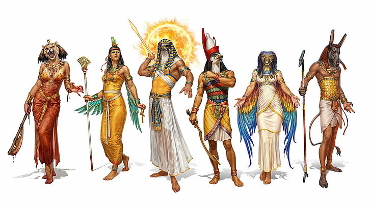★━━ Principales dioses ━━★
Bastet
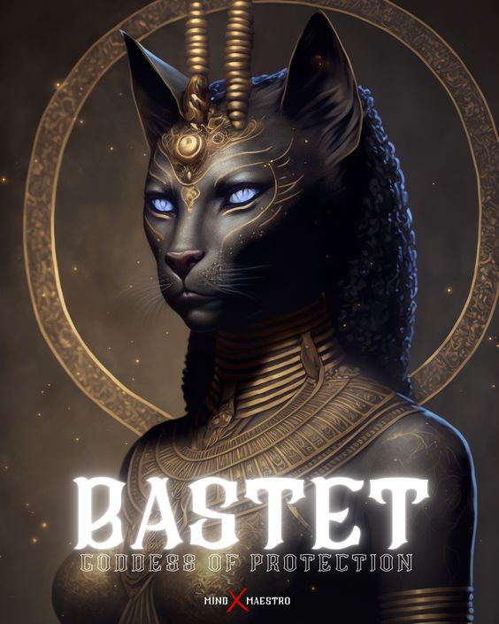Bastet o Bast es una diosa del antiguo Egipto, adorada desde la Segunda Dinastía (2890 a. C.). Representa la protección, el amor y la armonía. Protectora de los hogares y templos. Fue la diosa de la guerra en el Bajo Egipto, región del Delta del Nilo, antes de la unificación de las culturas del antiguo Egipto. Se representaba bajo la forma de un gato doméstico, o bien como una mujer con cabeza de gato, que siempre lleva un ankh (cruz de la vida egipcia) o en otros casos un sistro (instrumento musical) debido a que le agradaba especialmente que los humanos bailaran y tocaran música en su honor
Horus
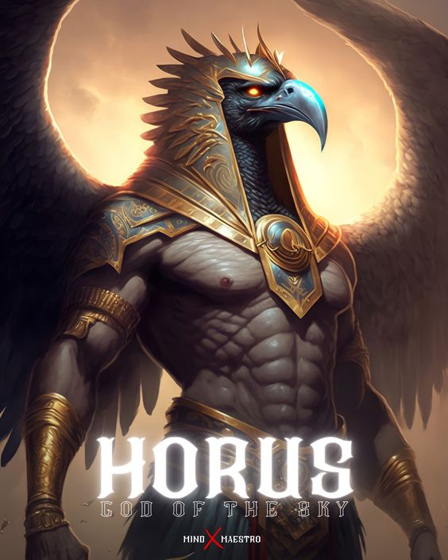Horus es una de las más importantes deidades del antiguo Egipto, que desempeñaba numerosas funciones, de manera más notable como dios de la realeza y del cielo en la mitología egipcia, así como de la guerra y de la caza. A veces se le consideraba como el iniciador de la civilización egipcia. Fue venerado al menos desde el Egipto prehistórico tardío hasta el Reino Ptolemaico y el Egipto romano.
Set
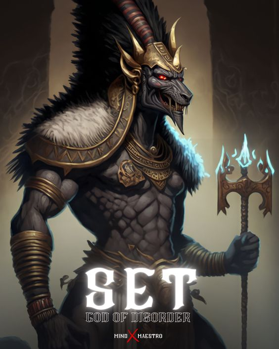Set es la deidad de la fuerza bruta, de lo tumultuoso, lo incontenible y los extranjeros. Señor de lo que no es bueno y las tinieblas, dios de la sequía,el caos y del desierto en la mitología egipcia. Seth fue la divinidad patrona de las tormentas, la guerra y la violencia, también fue patrón de la producción de los oasis dinastía XIX, Los símbolos de set son los reptiles en especial cocodrilos y cobras, también se le asocian las plagas.
Anubis
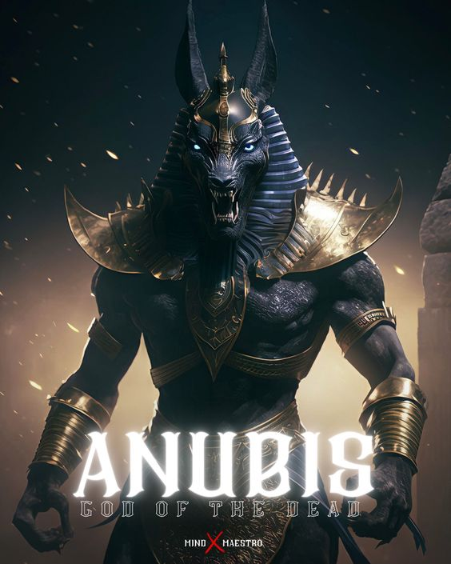Inpu en egipcio o Anubis en griego aparte de ser su nombre más conocido, es el guardián de las tumbas asociado con la muerte y la vida después de ésta en la religión del Antiguo Egipto, señor de las necrópolis y patrón de los embalsamadores, representado como un gran cánido, probablemente un chacal o un perro salvaje, o como un hombre con cabeza de chacal. Los principales epítetos del dios Anubis resaltan sus vínculos con los grandes cementerios del país y su papel como deidad funeraria
Ra
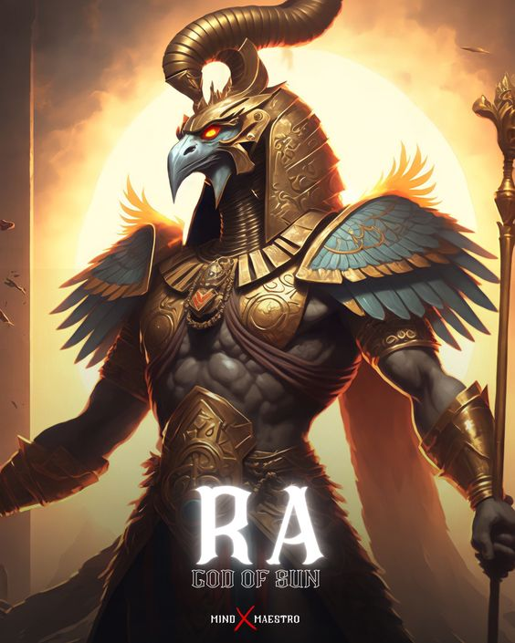Ra es el dios del Sol y del origen de la vida en la mitología egipcia. Ra es el símbolo de la luz solar, creador de vida. Dios que representa el sol del mediodía, en su máximo esplendor. En los primeros tiempos era la figura más importante del Mundo Inferior; se decía que cada noche viajaba por él bajo la forma de Auf-Ra, el sol poniente. Para viajar por el cielo se creía que lo hacía en barca de Oriente a Occidente en un viaje de 24 horas; de día era una barca conocida como "Mandjet"; por la noche viaja en una barcaza pequeña llamada "Mensenktet"; según los momentos del viaje, se manifestaba en tres entidades diferentes: al amanecer era Jepri; al mediodía, Horajti y al anochecer, Atum.
Osiris
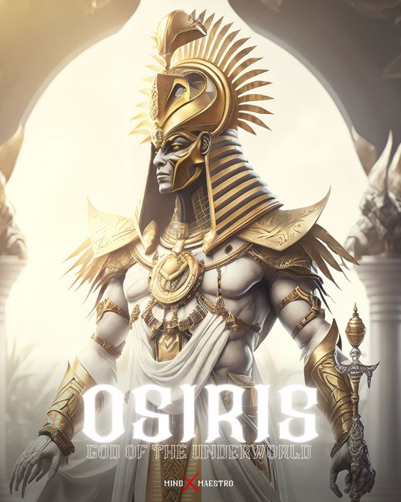osiris es el dios más importante del panteón egipcio. Al dios de la resurrección, de la regeneración del Nilo y de la fertilidad también se le atribuye la invención de la agricultura y la religión. Habitualmente, se le representa momificado, con la piel verde o negra y con los atributos de la realeza. Resulta imprescindible para entender algunos de los puntos clave de los faraones, tales como el funcionamiento de la monarquía y el derecho de sucesión, pues fue considerado un soberano justo y generoso. Su mito está relacionado con las ideas del bien y del mal y con la posibilidad de una vida más allá de la muerte.
Sekhmet
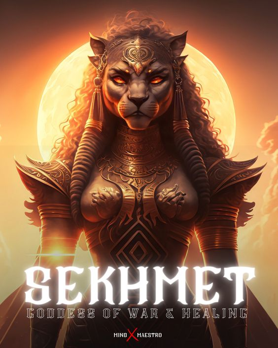Sejmet o Sekhmet fue una diosa de la mitología egipcia, símbolo de la fuerza y el poder. Era considerada la diosa de la guerra y de la venganza, pero también la diosa de la curación. Se decía que su aliento creó el desierto. Era la protectora de los faraones y los guiaba en la guerra.
Thoth
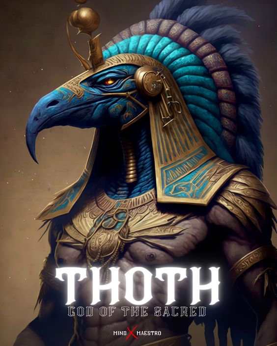Thoth es el nombre de una antigua divinidad egipcia. Es el dios de la sabiduría, la escritura jeroglífica, la ciencia, la magia, las artes, el juicio y los muertos. La diosa Seshat es su equivalente femenino, y la diosa Ma'at es su esposa. En la religión egipcia Thot es un dios con numerosos atributos, relacionados siempre con las artes y la sabiduría. Originalmente un dios lunar, se asociaba con la medición del tiempo y su parcelación en períodos, creados a partir de la observación de las fases de la Luna.
Amun
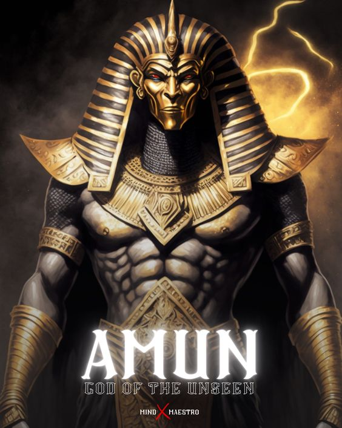Una figura tan importante como enigmática. Su nombre significaba “lo oculto”, y simbolizaba el poder en sí mismo, por lo que tenía múltiples representaciones. Su imagen podía ser la de un halcón, un toro que llevaba el disco solar entre sus cuernos, un carnero o un hombre de larga barba y atributos nobles. Es uno de los cuatro dioses primordiales de la creación, y fue ganando importancia a medida que el poder político se concentraba en Tebas, la ciudad de origen de esta divinidad. Con el tiempo se asoció con el sol, como Amón-Ra, convirtiéndose en el patrono de los faraones
★━━━━━ historias ━━━━━★
La muerte de Osiris
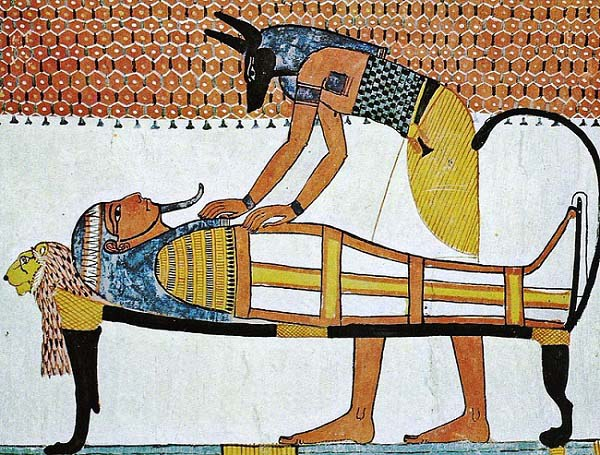Probablemente uno de los mitos más conocidos del Antiguo Egipto es el el asesinato de Osiris, su resurrección y el nacimiento de Horus, los cuales nos hablan de problemas familiares y fratricidio como instrumento para alcanzar el poder, además del conflicto entre orden y caos. El mito nos explica que Osiris era inicialmente el gobernador del territorio de Egipto, siendo el hijo mayor de Nut y Geb. Su hermano Seth le tenía gran odio y rencor, según algunas versiones por haber tenido relaciones con su pareja Neftis, y decidió quitarle la vida. Un día, en una fiesta, Seth trajo un ataúd el cual se quedaría aquella persona que cupiera en él, siendo únicamente Osiris quien cabía dentro. Tras entrar en el sarcófago, Seth lo encerró y lo lanzó al río, donde murió. La mujer de Osiris, Isis, se propuso recuperar el cuerpo, a lo que Seth respondió descuartizándolo y separando sus diversas partes. Seth, ante la muerte de su hermano, tomó el poder. Isis, con ayuda de otras deidades, logró reunir todas o casi todas las partes del cuerpo de su marido y tras momificarlo posteriormente le devolvió a la vida. Tras ello copuló con su marido, una unión que provocaría el nacimiento de Horus. La vuelta a la vida de Osiris traería consigo un cambio: pasaría de ser un dios de la vida a ser una deidad vinculada a la vida eterna y a la preservación y guía de los muertos en el más allá. Asimismo, su hijo Horus y se hermano Seth también se enfrentarían por el trono durante años, con múltiples conflictos en que ambos resultan heridos y resultando vencedor de estos Horus, quien obtendría el legado de su padre.
El nombre secreto de Ra
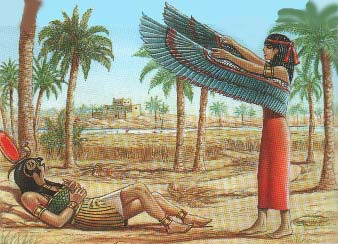Una de las características relevantes de la cultura egipcia era la gran relevancia que se le daba al nombre, que según las creencias de dicho pueblo otorgaba gran poder sobre la persona y permite comprender el interior de dicho ser. De hecho, al nacer a una persona se le ponían hasta tres nombres, siendo solo uno de ellos compartido a nivel público. Una de las leyendas va dirigida precisamente a hablar sobre el nombre secreto de uno de los principales dioses egipcios: Ra. Dice la leyenda que en una ocasión en la que un anciano dios Ra comenzaba a perder poder y facultades el resto de dioses empezó a ambicionar su poder. El dios tenía múltiples nombres, pero había uno que no era conocido por nadie y del cual extraía la mayor parte de su poder. La diosa Isis deseaba conocer dicho nombre, debido a que quería el trono y los dones de Ra para su futuro hijo Horus. En su sabiduría la diosa tramó un plan para lograr conocer dicho nombre, el nombre secreto y verdadero de la deidad. Empezó a recoger los efluvios salivales de Ra y al mezclarlos con tierra la diosa dio origen a la primera de las cobras, para posteriormente lanzarla en el camino de su padre. La cobra mordió y envenenó a Ra, ante lo cual Isis se ofreció a curarle a cambio de que le dijera cuál era su nombre verdadero y secreto (oculto hasta para los mismos dioses). El dios aceptó con la condición de que Isis jurara no revelarlo a nadie más que a Horus, algo a lo que accedió y tras lo cual hizo que el veneno saliera del dios y que este se recuperara. Ra compartió su nombre verdadero con ella y con su hijo, dándoles así un gran poder y el futuro trono de Egipto.
El mito de la creación
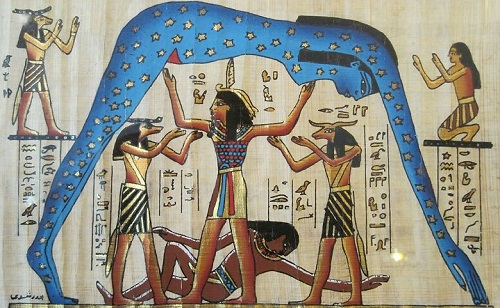Al igual que el resto de culturas, la egipcia posee también su propia versión de la creación del universo y el mundo en el que vivimos. De hecho, existen tres versiones conocidas en función de la ciudad que lo generó y las deidades a las que venerara. Una de ellas es la Iunu, posteriormente conocida como Heliópolis, la cual es conocida por ser la ciudad en la que surgió y prevaleció el culto al dios Ra como deidad primordial. Dice la leyenda que en un principio solo existía un inmenso e infinito océano de nombre Nun, el cual permanecía inmóvil y totalmente dormido. Ni cielo ni tierra, ni plantas ni animales ni el hombre existían. Solo Nun, el cual contenía todos los elementos posibles. Pero un día, el mundo tomó conciencia de sí mismo y de su situación, dándose el nombre de Ra. Este sería el primer dios, el cual al principio estaba solo en medio del océano. Pero poco a poco empezó a crear: su aliento se tornaría el dios Shu, el aire, y su saliva al dios de la humedad Tefnut. A continuación creó una isla o tierra en la que reposar, la cual denominó Egipto, y al nacer del agua decidió crear el Nilo para alimentarla. Con los elementos del gran océano Ra fue creando los distintos seres vivos. Shu y Tefnut, en otro punto del Nun, tuvieron hijos, la deidad Geb de la Tierra, y Nut, del Cielo. Ambos hijos tuvieron relaciones y su padre Shu, celoso, decidió separarlos sosteniendo al primero bajo sus pies y la segunda sobre su cabeza. De la unión de ambos dioses nacerían las estrellas y el resto de deidades. Acabada su creación el dios Ra mandó a uno de sus ojos a buscar a su prole, pero dicho ojo se encontraría a volver que al dios le había crecido otro nuevo. Desesperado, el ojo empezó a llorar, creando sus lágrimas a los primeros seres humanos. El dios Ra, viendo su dolor, se lo colocó en la frente: se había creado el Sol.
La leyenda del origen del calendario egipcio
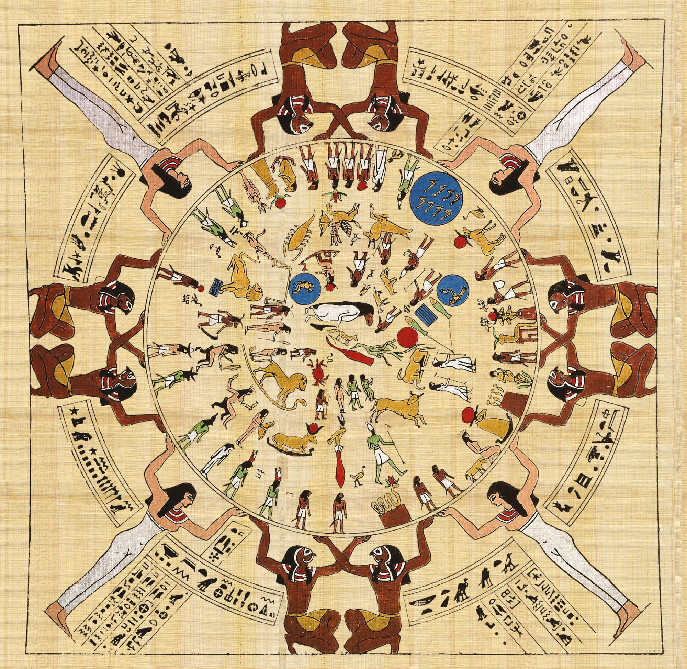La civilización egipcia tenía ya un calendario que constaba de un total de 365 días, el cual es protagonista de otro de los grandes mitos y leyendas egipcios que estamos tratando en este artículo. Dice la leyenda que en un principio los años solo constaban de 360 días. En una etapa de la creación en que Ra gobernaba, se predijo que su nieta Nut tendría relaciones con Geb, algo que según la profecía tendría como resultado un hijo que le arrebataría el poder. La joven estaba ya embarazada, con lo que con tal de evitarlo Ra lanzó una maldición de Nut, de tal modo que no pudiera tener hijos ninguno de los días del año. La deidad estaba desesperada, pero acudió en su ayuda el dios Thot, quien ideó un método para que pudiera hacerlo. Thot acudió al dios de la luna Jonsu, con el cual procedió a jugar apostándose tiempo y la luz de la Luna. Thot fue ganando en múltiples ocasiones, con lo que a lo largo del juego logró conseguir suficiente tiempo como para crear cinco días. Estos días, que no formaban parte del año, podrían ser usados por Nut para parir a sus hijos. Y así pudo la diosa parir a Osiris, Seth, Isis y Neftis, de los cuales Osiris alcanzaría el puesto de su padre.